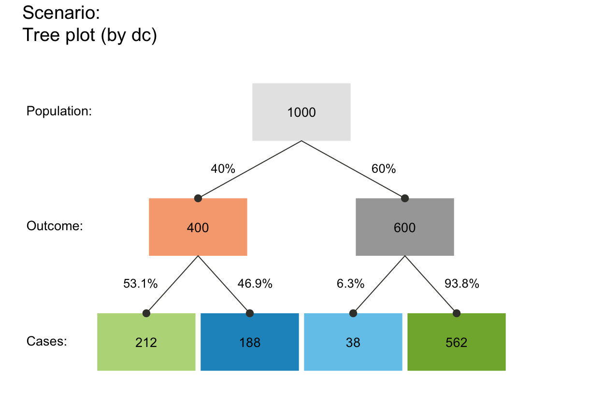

plot_tree drew a tree diagram of
frequencies (as nodes) and probabilities (as edges).
plot_tree( prev = num$prev, sens = num$sens, mirt = NA, spec = num$spec, fart = NA, N = freq$N, round = TRUE, by = "cd", area = "no", p_lbl = "num", show_accu = TRUE, w_acc = 0.5, title_lbl = txt$scen_lbl, popu_lbl = txt$popu_lbl, cond_true_lbl = txt$cond_true_lbl, cond_false_lbl = txt$cond_false_lbl, dec_pos_lbl = txt$dec_pos_lbl, dec_neg_lbl = txt$dec_neg_lbl, hi_lbl = txt$hi_lbl, mi_lbl = txt$mi_lbl, fa_lbl = txt$fa_lbl, cr_lbl = txt$cr_lbl, col_txt = grey(0.01, alpha = 0.99), cex_lbl = 0.85, col_boxes = pal, col_border = grey(0.33, alpha = 0.99), lwd = 1.5, box_lwd = 1.5, col_shadow = grey(0.11, alpha = 0.99), cex_shadow = 0 )
Arguments
| prev | The condition's prevalence |
|---|---|
| sens | The decision's sensitivity |
| mirt | The decision's miss rate |
| spec | The decision's specificity value |
| fart | The decision's false alarm rate |
| N | The number of individuals in the population. |
| round | A Boolean option specifying whether computed frequencies
are rounded to integers. Default: |
| by | A character code specifying the perspective (or category by which the population is split into subsets) with 3 options:
|
| area | A character code specifying the area of the boxes (or their relative sizes) with 3 options:
|
| p_lbl | A character code specifying the type of probability information (on edges) with 4 options:
|
| show_accu | Option for showing current
accuracy metrics |
| w_acc | Weighting parameter Various other options allow the customization of text labels and colors: |
| title_lbl | Text label for current plot title. |
| popu_lbl | Text label for current population |
| cond_true_lbl | Text label for current cases of |
| cond_false_lbl | Text label for current cases of |
| dec_pos_lbl | Text label for current cases of |
| dec_neg_lbl | Text label for current cases of |
| hi_lbl | Text label for hits |
| mi_lbl | Text label for misses |
| fa_lbl | Text label for false alarms |
| cr_lbl | Text label for correct rejections |
| col_txt | Color for text labels (in boxes). |
| cex_lbl | Scaling factor for text labels (in boxes and on arrows). |
| col_boxes | Colors of boxes (a single color or a vector with named colors matching the number of current boxes).
Default: Current color information contained in |
| col_border | Color of borders.
Default: |
| lwd | Width of arrows. |
| box_lwd | Width of boxes. |
| col_shadow | Color of box shadows.
Default: |
| cex_shadow | Scaling factor of shadows (values > 0 showing shadows).
Default: |
Value
Nothing (NULL).
Details
plot_tree is deprecated -- please use plot_prism instead.
See also
plot_prism is the new version of this function.
Other visualization functions:
plot.riskyr(),
plot_area(),
plot_bar(),
plot_curve(),
plot_fnet(),
plot_icons(),
plot_mosaic(),
plot_plane(),
plot_prism(),
plot_tab()
Examples
plot_tree() # frequency tree with current default options (by = "cd")#># alternative perspectives: plot_tree(by = "dc") # tree by decision#>plot_tree(by = "ac") # tree by accuracy#># See plot_prism for details and additional options.